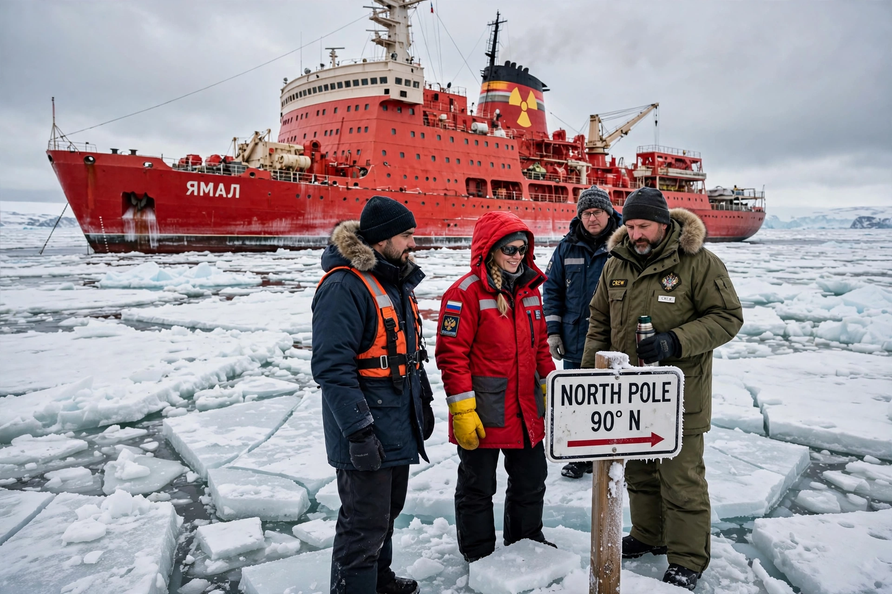

[Image placeholder: A nuclear icebreaker at the geographic North Pole]The **North Pole**, also known as the Geographic North Pole or Terrestrial North Pole, is the point in the Northern Hemisphere where Earth's axis of rotation meets its surface — latitude 90° North, in the middle of the Arctic Ocean, over water some 4,000 m deep covered by shifting sea ice. All directions from the pole are south, and all lines of longitude converge there, so the pole has no timezone of its own.
Unlike the South Pole's land station, the North Pole sits on drifting ice in international waters; the surrounding states dispute seabed rights under UNCLOS, stoked by the 2007 Russian expedition that planted a flag on the seabed (a symbolic act with no legal effect). Claims to have first reached the pole — Frederick Cook (1908), Robert Peary (1909) — remain disputed; the first undisputed attainment was the 1926 airship Norge flight of Amundsen, Ellsworth and Nobile, and the first undisputed surface arrival was Ralph Plaisted's 1968 snowmobile expedition. Nuclear submarines (beginning with USS Nautilus under the ice, 1958, and Skate surfacing at the pole in 1959) and Russian icebreakers regularly visit; summer sea-ice loss is making the pole seasonally open water in projections.
The celestial north pole currently sits near Polaris. The north magnetic pole — where compasses point down — wanders in the Canadian Arctic toward Siberia and is distinct from both the geographic pole and the geomagnetic pole.